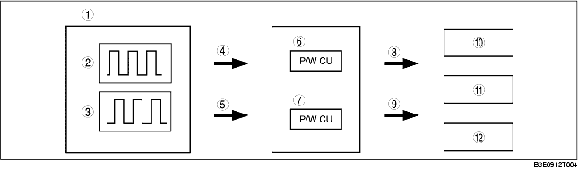

• Manual and auto-open/close can be performed for all windows by operation of the driver's seat switches.
• Manual and auto-open/close can be performed for each specific window by operation of the switches at the passenger's and rear seats.
• By locking the power cut switch, operation of the power window main switches for each seat and the power window subswitches is inhibited.
• A built-in P/W CM (power window control module) controls the power window system control based on the pulse signals from the power window motor.
• The position and movement direction of the window is stored at the time of vehicle delivery. Due to this, the initial position setting must be performed after performing any of the following procedures:
Block Diagram

.